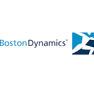

Subsidiary · USA
Boston Dynamics Company Profile
Advanced robotics
Boston Dynamics facts
- Category
- Advanced robotics
- Primary focus
- Autonomous Robotics
- Segments
- Autonomous Robotics · Industrial
- Country
- USA →
- Type
- Subsidiary
- Ticker
- Hyundai Motor Group
- Website
- Official website →
Robologai signal
Boston Dynamics is tracked for autonomous robotics deployment: mobile systems, field robots, delivery, inspection, logistics, or other real-world automation lanes. Tracked products include Atlas, Spot.
Strategic Positioning
Why Boston Dynamics matters to the physical AI economy.
Autonomous RoboticsIndustrial
2 intelligence tags attached to this profile.
Company Snapshot
Core signals Robologai tracks for Boston Dynamics.
Product Lineup
Tracked robots and products associated with Boston Dynamics.
Data Quality
Robot coverage, official sources, market type, and review status.
Source Notes
Boston Dynamics source trail.
Market Signal
How Boston Dynamics fits into the robotics economy.
Related Companies